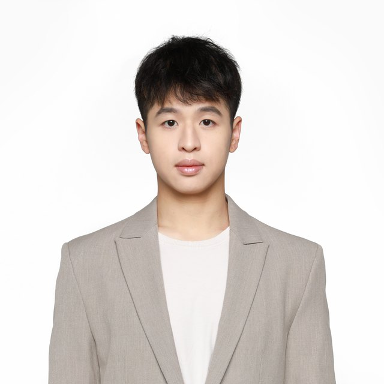
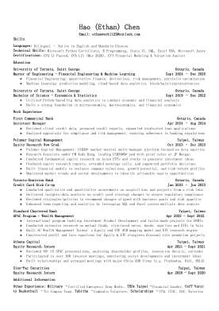

Analyst, Quantum International Corp. (QIC)
Semiconductor and Traditional Industry Research
Email: ethanchen@qtumic.comPhone: +886-978867566LinkedIn
I’m Ethan, an analyst at Quantum International Corp. (QIC), the Taipei firm known as Taiwan’s “Small McKinsey”. We help small and mid-cap listed companies raise their equity value and put their management teams in front of global institutional investors. This site is my map of the semiconductor supply chain, from raw materials and wafers to AI racks and end markets: who makes what, how it connects and where the value sits.
Quantum International Corp. (QIC)
Polymer Capital Management
